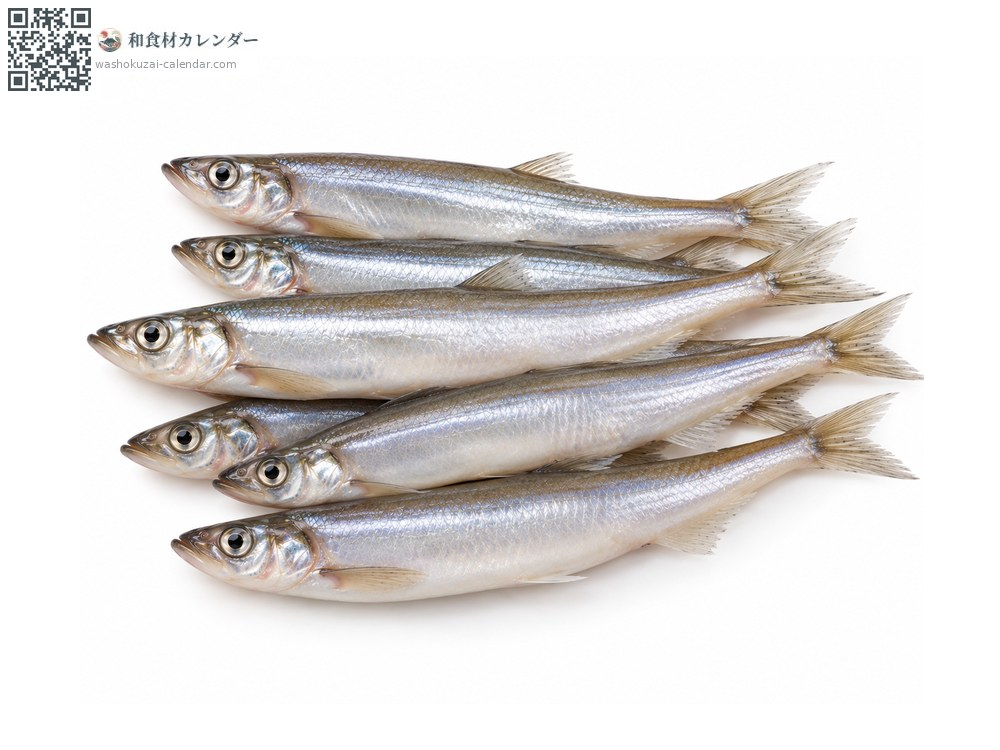
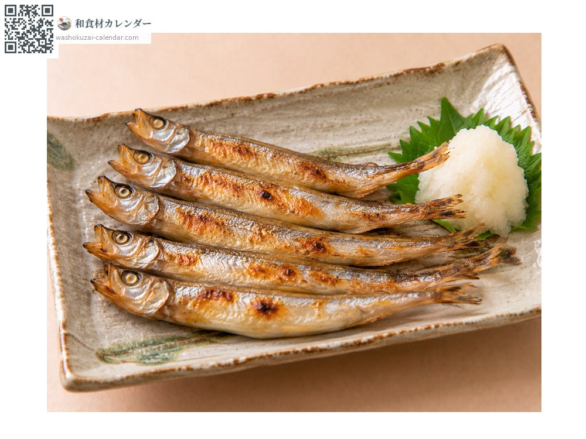
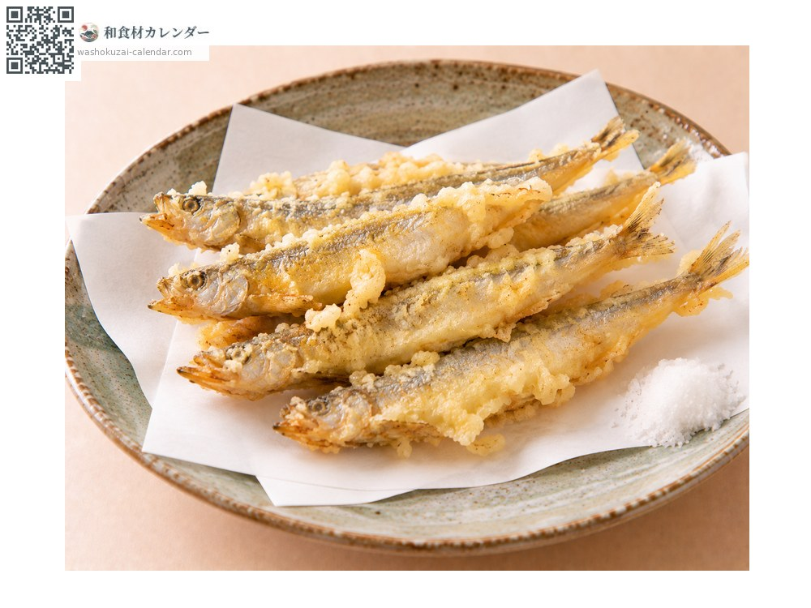
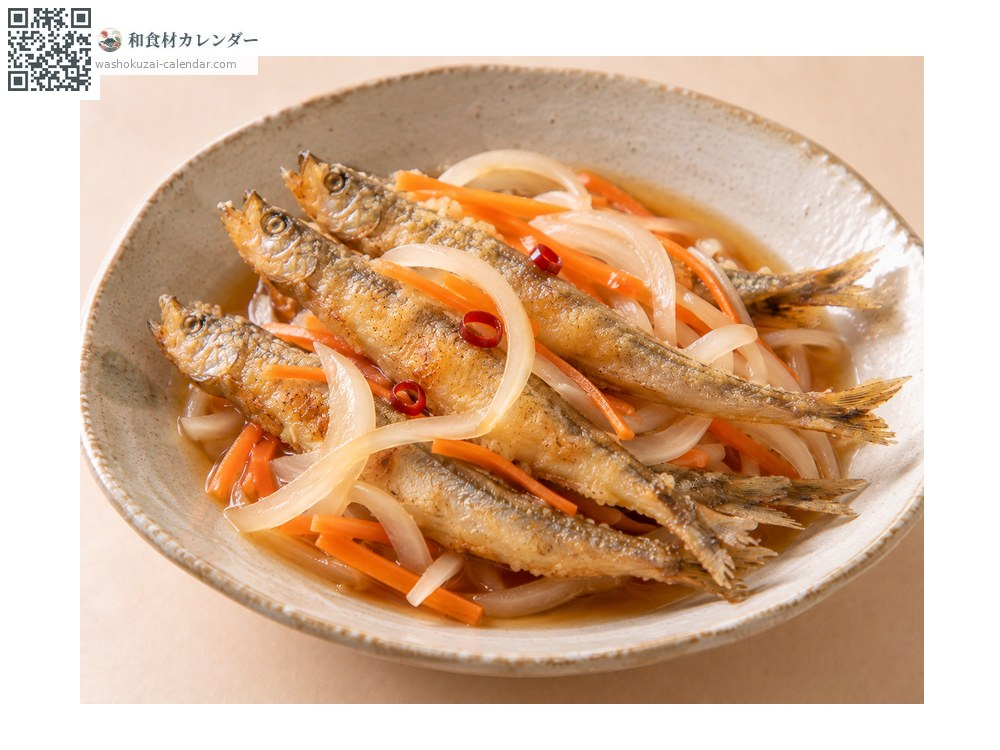
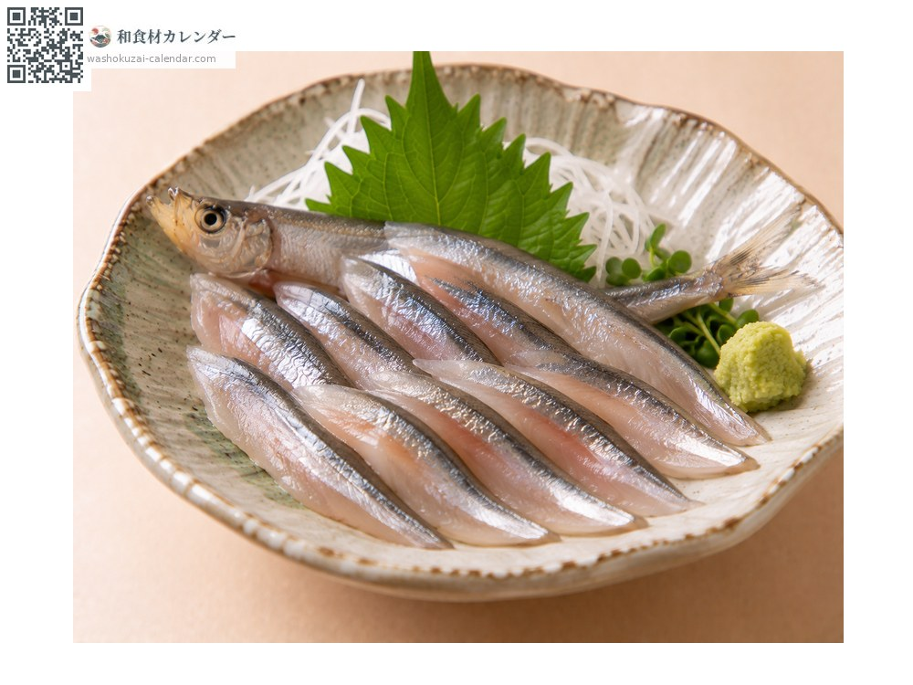

魚介
ししゃも
ししゃも
旬は11月

旬の時期
1月
2月
3月
4月
5月
6月
7月
8月
9月
10月
11月
12月
旬出回り
調理法

塩焼き
丸ごと焼く。頭から尾まで食べられる。

天ぷら
衣をつけて揚げる。卵のぷちぷち感が立つ。

南蛮漬け
揚げてから漬ける。骨まで食べられる。

刺身
産地でのみ。鮮度の良いものは脂が濃い。
選び方
体が銀色に輝き、腹が膨らんだ子持ちが珍重される。鱗が付いているもの。
保存方法
傷みが早い。冷蔵で当日から翌日に。冷凍品は凍ったまま焼く。
主な産地
豆知識
日本固有種で、北海道太平洋岸の一部の川にのみ遡上する。十月から十一月の産卵期にだけ獲れる希少な魚。市場で広く出回る「ししゃも」の多くは、北大西洋などで獲れるカペリン（樺太ししゃも）という別種で、本ししゃもとは科が異なる。